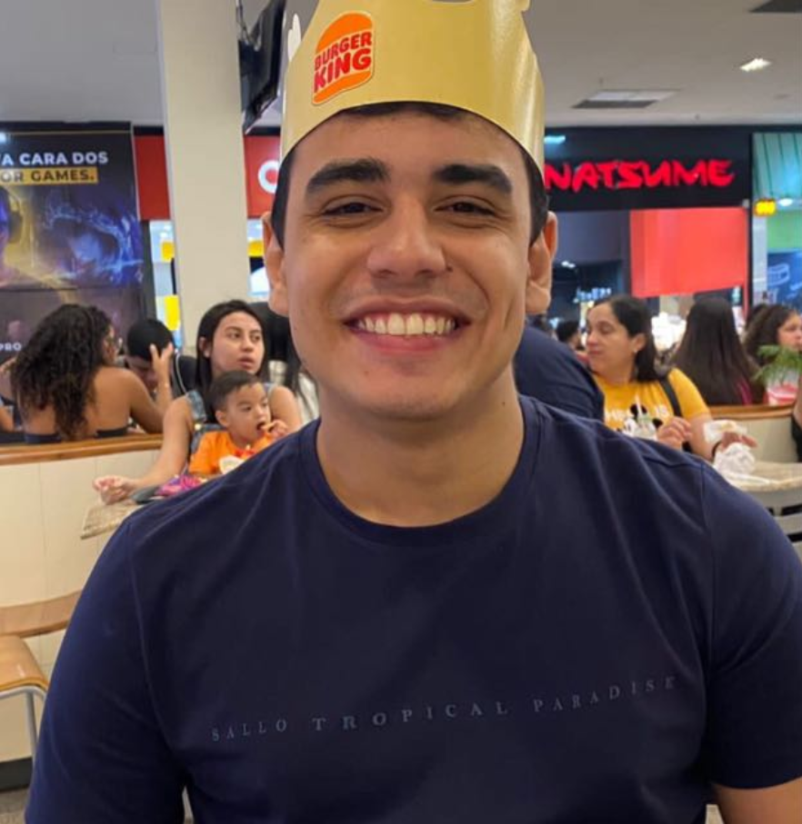
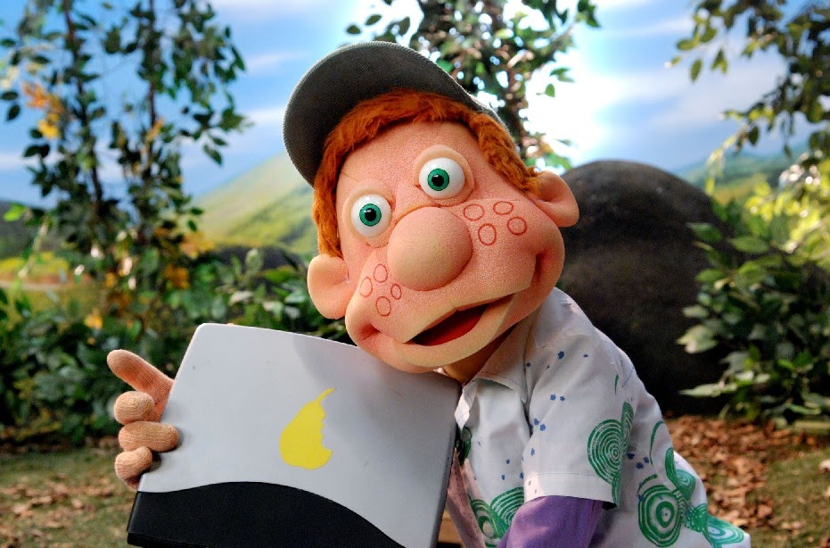
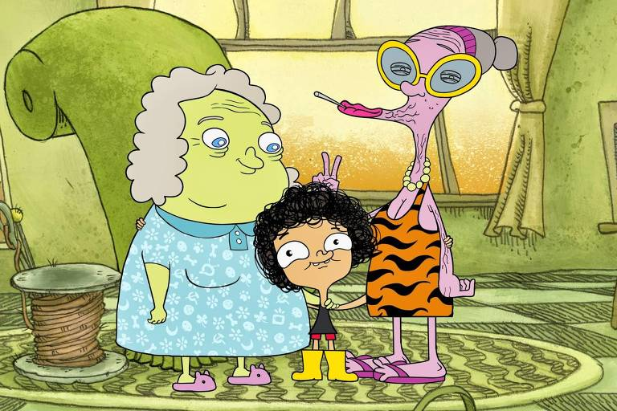
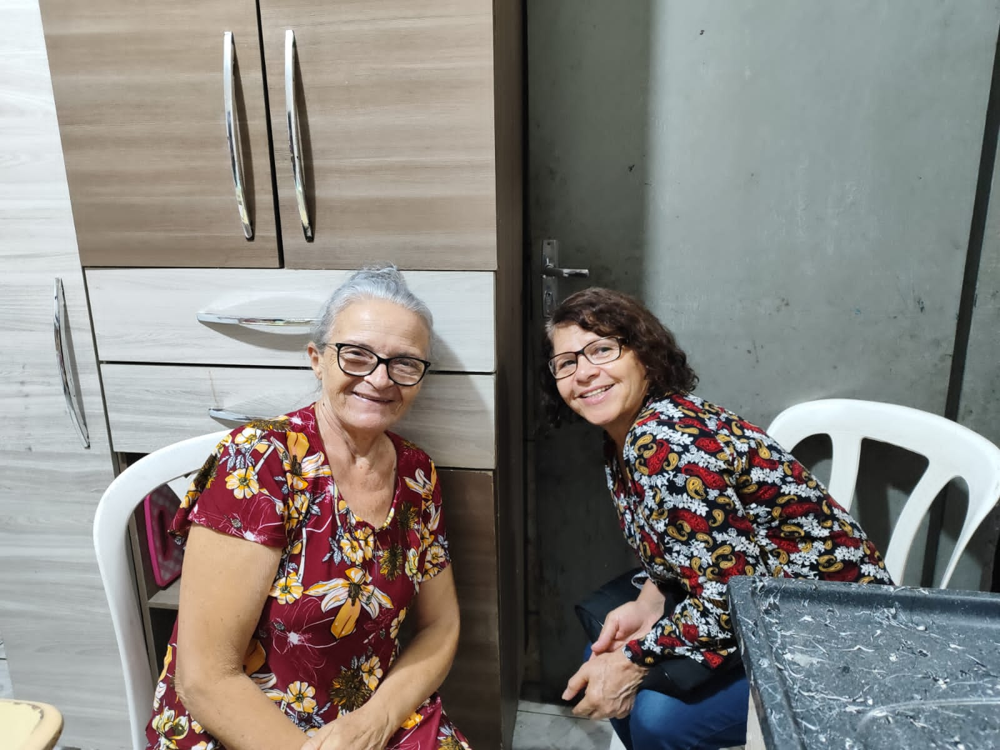
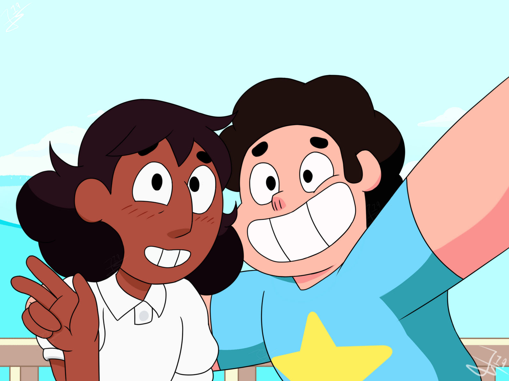
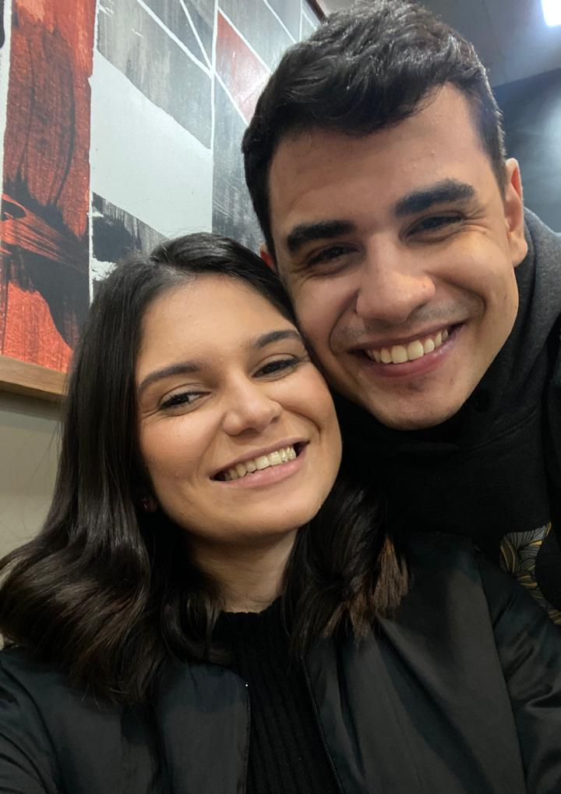

Oi, eu sou o Guigo!
Que tal conhecer algumas curiosidades sobre mim?
Quando eu era criança, o meu personagem de desenhos animados favorito era o Júlio

O Júlio é um menino sonhador, cheio de imaginação, que adorava aprender, fazer perguntas e estar
perto de quem gostava. Sempre disposto a ajudar, mesmo nas coisas mais simples, o Júlio me ensinou
que ser gentil, ouvir os outros e ter um coração aberto faz toda a diferença.
Eu sempre me identifiquei muito com o Irmão do Jorel. Afinal, assim como ele, eu fui criado pelas minhas duas vovós!


Eu e a Thays somos muito parecidos com o Steven e a Connie, porque além de namorados, somos grandes amigos e temos uma confiança enorme um no outro.

